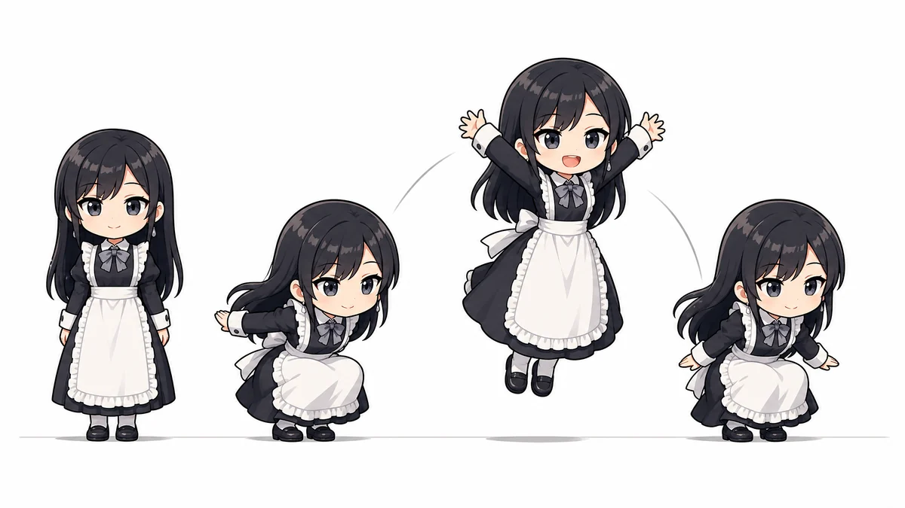
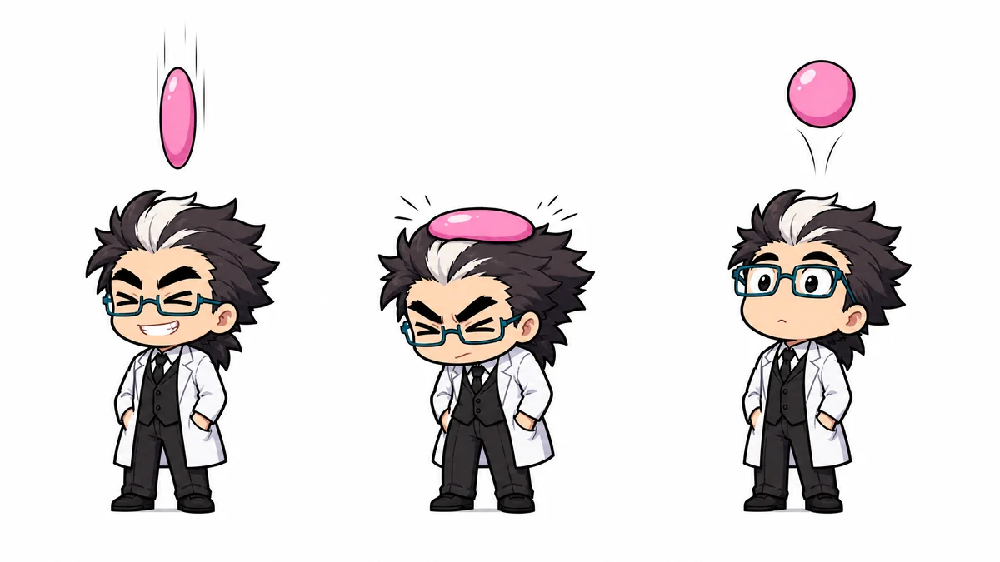
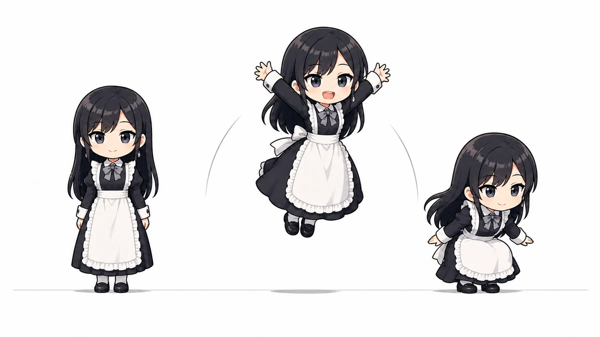
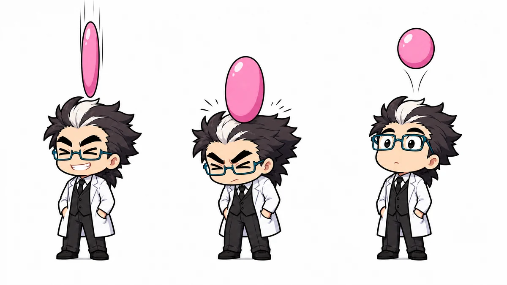

오늘의 과제

박사오늘은 그림을 움직인다. 시아가 뛰고, 공이 내 머리에 떨어진다.

주판봇빠르게! 모든 동작을 최고 속도로! 빠를수록 웃깁니다!

초파리 연구원너무 빠르면 무슨 일이 일어났는지도 몰라. 준비, 동작, 멈춤의 박자부터 정하자.

시아점프는 자신 있습니다. 박사님은… 공을 조심하세요.
모델은 시아, 손님은 박사입니다. 주판봇은 "움직임은 빠를수록 웃기다"고 믿습니다. 초파리는 "멈추는 순간이 제일 웃기다"고 합니다. 움직이는 그림에서 웃음은 어디에 숨어 있을까요?
그림 실력·코드·수식을 몰라도 됩니다. 실험을 눌러 보며 따라오세요.
점프 전에 웅크리기, 던지기 전에 뒤로 젖히기 — 예비동작이 있어야 보는 사람이 "곧 무슨 일이 일어난다"를 알아챕니다

학교 수학으로 보면 — 나눗셈 — 거리 ÷ 속력 = 시간과 같은 꼴입니다. 프레임 수 ÷ 초당 프레임 수 = 초.
| 식 조각 | 뜻 |
|---|---|
| 예비동작 프레임 수 | 웅크리는 그림이 몇 장인가 |
| 12 | 이 실험의 초당 프레임 수(12fps) |
| 시간(초) | 보는 사람이 "준비 중"을 알아챌 시간 |

재채기, 하품, 기지개 모두 본동작 전에 반대쪽으로 움츠리는 준비가 있습니다.
애니메이션 원화에서는 "예비 → 동작 → 마무리"를 세 장의 열쇠 그림(키 프레임)으로 먼저 그리고, 사이 그림은 나중에 채웁니다.


예비동작 0프레임이면 갑자기 떠오르는 것처럼 보이고, 3~4프레임(0.25~0.33초)이면 준비가 보이면서도 늘어지지 않습니다.
7~8프레임(0.6초 이상)이면 준비가 길어 "언제 뛰나" 기다리게 됩니다. 일부러 길게 끌어 웃기는 경우가 아니라면 줄입니다.
작업에서는 웅크리는 깊이도 함께 봅니다. 깊이 웅크릴수록 점프가 크게 느껴집니다.

영상 AI에게 "Sia jumps"를 넣었더니 시아가 서 있다가 바로 공중에 떠 있는 2초짜리 영상이 나왔습니다. 괜찮을까요?
예비동작이 없어 순간이동처럼 보입니다. "she first crouches down deeply, then jumps up high, then lands softly bending her knees"처럼 예비 → 동작 → 마무리를 순서대로 적어 다시 요청합니다.
공이 바닥에 부딪힐 때 납작해지고 빨리 떨어질 때 길어집니다. 이때 부피(넓이)는 그대로 둡니다
학교 수학으로 보면 — 반비례 — x × y = 1, y = 1/x. 한쪽이 2배가 되면 다른 쪽은 1/2배입니다.
| 식 조각 | 뜻 |
|---|---|
| 세로 배율 | 늘어난(또는 찌그러진) 정도. 1보다 크면 늘어남, 작으면 찌그러짐 |
| 가로 배율 | 부피를 지키기 위해 줄이거나 늘리는 폭 |
| = 1 | 원래 넓이를 지킨다는 뜻 |
물풍선, 말랑한 젤리, 반죽 모두 눌리면 옆으로 퍼지고 늘이면 가늘어집니다. 양은 그대로입니다.
개그 애니메이션에서는 얼굴에도 이 원리를 씁니다. 놀라서 얼굴이 위로 늘어날 때 볼이 홀쭉해지고, 무언가에 눌릴 때 볼이 옆으로 퍼집니다.
부피를 유지하면 1.5배로 늘어날 때 폭이 0.67배, 부딪힐 때(세로 0.67배) 폭이 1.5배가 되어 넓이가 늘 1입니다.
부피를 유지하지 않으면 늘어날 때 넓이가 1.5배로 커져 공이 부풀었다 줄었다 하는 것처럼 보입니다.
작업에서는 재질에 따라 배율을 고릅니다. 고무공 1.3~1.6, 물풍선 1.7 이상, 볼링공 1.1 이하(거의 안 변함).

영상 AI가 만든 "고무공이 튀는 영상"에서 공이 튈 때마다 조금씩 커집니다. 써도 될까요?
부피가 지켜지지 않았습니다. "the ball keeps the same volume: it stretches thinner when falling and squashes wider on impact, never grows"를 넣어 다시 요청하고, 첫 장면과 마지막 장면의 공 크기를 비교해 봅니다.
프레임이 적으면 빠르고 툭툭 끊기며, 많으면 느리고 부드럽습니다. 간격을 처음에 좁게 하면 천천히 출발합니다
학교 수학으로 보면 — 이차함수 y = x² — x = 0.25일 때 0.0625, 0.5일 때 0.25, 1일 때 1. 처음엔 완만하고 나중에 가파릅니다.
| 식 조각 | 뜻 |
|---|---|
| 시간 비율 | 지금 몇 번째 프레임인지를 0~1로 바꾼 값 |
| (시간 비율)² | 처음엔 작게, 끝으로 갈수록 크게 커지는 이동량 |
| 거리 | 처음부터 끝까지 움직일 길이 |
엘리베이터·지하철은 천천히 출발하고 천천히 멈춥니다. 공을 던지면 손을 떠날 때가 가장 빠릅니다.
애니메이터는 열쇠 그림 사이에 "간격 표"를 그려 두고 사이 그림의 위치를 정합니다. 점이 몰린 곳은 느리게, 벌어진 곳은 빠르게 움직입니다.
프레임 수는 전체 시간을 정합니다(8프레임 ÷ 12 ≈ 0.67초). 간격은 그 시간 안에서 어디가 빠르고 느린지를 정합니다.
"천천히 출발"은 처음 점이 몰리고 끝 점이 벌어져, 마지막에 확 도착하는 느낌을 줍니다. 놀라서 돌아보는 개그에 잘 맞습니다.
작업에서는 "일정하게"를 피하고, 동작의 성격에 맞는 곡선을 고릅니다. 무거운 물건은 천천히 출발, 던진 물건은 빠르게 출발입니다.
영상 AI 결과에서 시아의 고개가 처음부터 끝까지 같은 속도로 돌아갑니다. 괜찮을까요?
틀린 것은 아니지만 기계처럼 보입니다. "she turns her head slowly at first, then snaps to face the camera"처럼 속도 변화를 말로 적어 다시 요청합니다. 영상 AI는 숫자보다 이런 동작 묘사를 더 잘 따릅니다.
사고 → 정적(홀드) → 반응. 멈춤이 너무 짧으면 묻히고, 너무 길면 늘어집니다. 0.5~1초 안팎이 다루기 쉽습니다
농담 뒤에 잠깐 말을 멈추는 사람이 더 웃깁니다. 멈춤이 너무 길면 분위기가 식습니다.
개그 애니메이션은 사고 직후 캐릭터가 굳은 채 정지하는 장면을 자주 씁니다. 이때 작은 소리(바람 소리, 귀뚜라미 소리)를 넣어 멈춤을 강조하기도 합니다.

정지 0~0.3초면 사고와 반응이 붙어 웃음이 묻히고, 0.5~1.2초면 보는 사람이 상황을 따라잡은 뒤 반응이 터집니다.
1.5초를 넘으면 "멈춘 건가?" 싶어 늘어집니다. 일부러 길게 끌어 어색함으로 웃기는 방식도 있지만 의도해서 써야 합니다.
작업에서는 정지 동안 아주 작은 움직임(눈 깜빡임 한 번, 땀방울 하나)만 남깁니다. 완전히 멈추면 영상이 멈춘 것으로 오해받기도 합니다.
영상 AI에게 "ball hits the professor, his glasses pop off"를 넣었더니 두 일이 동시에 일어났습니다. 어떻게 고칠까요?
정지가 빠졌습니다. "1) the ball hits his head, 2) he freezes completely for about one second with a blank face, 3) then his glasses pop off"처럼 순서와 멈춤을 적습니다. 그래도 섞이면 장면을 두 영상으로 나눠 만들고 이어 붙입니다.
이 부에서 배운 원리를 그림 생성 AI(Genspark 등)로 직접 확인합니다. A는 이 페이지 그림을 실제로 만든 프롬프트, B는 원리를 하나 빼거나 바꾼 비교용 문장입니다.
참고 그림 내려받기: haru_anime_base · sia_anime_base · moa_anime_base · haru_sheet · sia_sheet · moa_sheet · doctor_sheet · fruitfly_sprites_6 · jupanbot_ref_genspark_v0 · pixel_style_ref_prev_cover
서기 → 웅크리기 → 뛰기 → 착지 네 열쇠 그림을 받고, 원하면 이미지→영상으로 움직여 봅니다.
첨부: refs/sia_anime_base.png, refs/sia_sheet.png
Illustration, wide 16:9. Art style: cute super-deformed comedy anime style, about 2.5 heads tall, clean bold lineart, flat cel colors with one soft shadow tone. Match the attached reference images exactly (face, hair, colors, accessories), simplified into the SD style. All characters are adults in their twenties (the Professor is an adult man in his thirties) drawn in a comedy SD style: adult personalities and adult outfits, not children; modest outfits exactly as described. Four key poses of Sia (adult maid intern, long straight jet-black hair, no headdress, gray eyes, small silver earrings), wearing charcoal-black long-sleeved maid dress, large gray bow at the collar, long white frilled apron from left to right like an animation sheet: 1) standing straight, 2) crouching down deeply with knees bent and arms back (anticipation), 3) jumping up high with arms raised and body stretched, 4) landing softly with bent knees. Faint motion arcs connect the poses. Same size and same ground line for all four. Plain white background. No text, no letters, no numbers, no speech-bubble text, no logos, no watermark, no revealing clothing, not childlike, no school uniform, not resembling any famous anime character or real person.
Same image, keep the same framing. Change only: remove the crouching pose; show standing, then directly high in the air, then landing — three poses. Still no text.

A 결과 그림을 첨부하고 이미지→영상 기능에 넣습니다. 길이 2~4초, 처음과 끝 장면이 같으면 반복 재생이 매끄럽습니다.
Use the attached image of Sia standing as the first frame. 3-second animation, SD comedy style, fixed camera, plain white background: she first crouches down deeply for a short moment, then jumps up high with arms raised, then lands softly bending her knees and returns to standing. Keep her face, hair and outfit exactly the same. No text.
실제 결과: A는 요청한 네 동작이 그대로 나왔고 웅크리기가 깊어 점프가 높아 보입니다. B는 뛰기 전 웅크림이 빠져 서 있다가 바로 떠 있는 것처럼 보입니다(착지 때 웅크림만 남음).
공이 늘어나고, 박사 머리에서 찌그러지고, 다시 튀는 세 순간을 받아 부피가 지켜지는지 봅니다.
첨부: refs/doctor_sheet.png
Illustration, wide 16:9. Art style: cute super-deformed comedy anime style, about 2.5 heads tall, clean bold lineart, flat cel colors with one soft shadow tone. Match the attached reference images exactly (face, hair, colors, accessories), simplified into the SD style. All characters are adults in their twenties (the Professor is an adult man in his thirties) drawn in a comedy SD style: adult personalities and adult outfits, not children; modest outfits exactly as described. Three moments side by side: 1) a pink rubber ball falling, stretched vertically and thinner (same volume), 2) the ball squashed flat and wider on top of the head of the Professor (adult male scientist in his thirties, dark charcoal spiky hair with a white streak at the front, very thick black eyebrows, teal rectangular glasses), wearing white lab coat over a black vest, white shirt and black tie who squeezes his eyes shut, 3) the ball bouncing back up round again while the Professor stands frozen with a blank face and his glasses lifted slightly. The ball looks the same size in total in all three moments. Plain white background. No text, no letters, no numbers, no speech-bubble text, no logos, no watermark, no revealing clothing, not childlike, no school uniform, not resembling any famous anime character or real person.
Same image, keep the same framing. Change only: the falling ball stretches taller but keeps its full round width, and the squashed ball keeps its full height, so the ball looks bigger in those moments. Still no text.

A 결과 그림을 첨부하고 이미지→영상 기능에 넣습니다. 길이 2~4초, 처음과 끝 장면이 같으면 반복 재생이 매끄럽습니다.
Use the attached image as the first frame. 3-second animation, fixed camera, plain white background: a pink rubber ball falls, stretching thinner, squashes wider on the Professor's head (same volume, never grows), bounces away; the Professor freezes with a blank face for about one second, then his glasses pop up. No text.
실제 결과: A는 늘어날 때 가늘고 찌그러질 때 넓어져 같은 공으로 보입니다. 첫 장면의 박사가 아직 맞기 전인데 이미 눈을 감고 웃는 표정인 점은 요청과 다릅니다. B는 머리 위 공이 찌그러지지 않고 세로로 긴 타원 그대로라 공이 커진 것처럼 보입니다.
이 부의 원리를 내 손으로 프롬프트에 옮겨 보는 과제입니다. 목표 → 순서 → 넣을 프롬프트 → 확인할 것 → 예상 결과 → 자주 생기는 문제 순서로 적었습니다. 결과는 매번 조금씩 다르니, 그림이 똑같지 않아도 '확인할 것'이 맞으면 성공입니다.
목표얼굴에 찌그러짐과 늘어남을 쓰되, 부피(전체 크기)는 지키는 두 장면을 만듭니다.
왜 이 연습인가"stretched face"만 적으면 얼굴이 커지기만 합니다. 늘어날 때 가늘어지고 찌그러질 때 넓어진다는 짝을 적어야 부피가 지켜집니다.
첨부할 참고 그림: refs/moa_anime_base.png, refs/moa_sheet.png — 참고 그림은 위 직접 만들어 보기에서 내려받을 수 있습니다.
Illustration, wide 16:9, two frames side by side. Art style: cute super-deformed comedy anime style, about 2.5 heads tall, clean bold lineart, flat cel colors with one soft shadow tone. Match the attached reference images exactly (face, hair, colors, accessories), simplified into the SD style. All characters are adults in their twenties (the Professor is an adult man in his thirties) drawn in a comedy SD style: adult personalities and adult outfits, not children; modest outfits exactly as described. LEFT: Moa (adult maid intern, long ash-beige wavy hair, white frilled maid headband with a white ribbon over her LEFT ear, amber eyes), wearing camel knit cardigan over a white blouse, red and navy plaid bow tie, white frilled apron, startled, her whole face and head stretched upward tall and thinner (cheeks narrower) like a squash-and-stretch cartoon. RIGHT: the same Moa a moment later, her face squashed down shorter and wider (cheeks puffed out). The head keeps the same overall size (same volume) in both frames. Plain white background. No text, no letters, no numbers, no speech-bubble text, no logos, no watermark, no revealing clothing, not childlike, no school uniform, not resembling any famous anime character or real person.
예상 결과왼쪽 모아는 얼굴이 세로로 길고 좁으며, 오른쪽은 짧고 넓습니다. 머리 전체 크기는 비슷해 같은 사람으로 보입니다.
| 문제 | 대처 |
|---|---|
| 리본이 오른쪽으로 갔다 | 부분 수정으로 리본만 고치기(6부 연습 과제) |
| 늘어난 쪽만 머리가 커졌다 | "stretched taller AND thinner"처럼 짝을 다시 적음 |
실제 결과: 두 장면의 표정은 달라졌지만, 얼굴이 위로 늘어나고 아래로 찌그러지는 변형은 거의 나오지 않았습니다. 도구가 얼굴 모양을 지키려는 경향이 강해서, 이 연습은 3부 2단계 실험 패널로 보충하세요.
더 해 보기이미지→영상 기능에 두 장면을 첫·끝 장면으로 넣어, 놀람 → 원래 얼굴로 돌아오는 1초 영상을 만들어 보세요.

| 항목 | 주판봇 | 초파리 |
|---|---|---|
| 알아봄(무슨 일인지) | 4 | 9 |
| 원리(예비·부피·정지) | 3 | 9 |
| 웃음 | 4 | 8 |
| 합계 | 11 | 26 |


점수는 이야기 속 예시입니다. 실제 그림을 평가한 값이 아닙니다.
| 주제 | 한 줄 | 작업에서는 |
|---|---|---|
| 1단계 예비동작 | 시간 = 프레임 ÷ 12. 3~4프레임(0.25~0.33초) | 예비 → 동작 → 마무리 열쇠 그림부터 |
| 2단계 찌그러짐·늘어남 | 가로 배율 = 1 ÷ 세로 배율 | 재질마다 배율을 고른다 |
| 3단계 프레임·간격 | 천천히 출발 = (시간 비율)² | 동작 성격에 맞는 곡선 |
| 4단계 정지 | 사고 → 정지 0.5~1.2초 → 반응 | 정지 중엔 눈 깜빡임 정도만 |

이 페이지에 나온 개념·방법·비유·쓰임을 모았습니다. 검색하고, "설명 보러 가기"로 본문에 돌아갑니다.
지식 색인을 출처와 함께 파일로 내려받습니다. 서지 관리는 BibTeX·RIS, 온톨로지 편집은 Turtle, 그래프 도구는 CSV, 여러 페이지 합치기는 kg.json입니다.